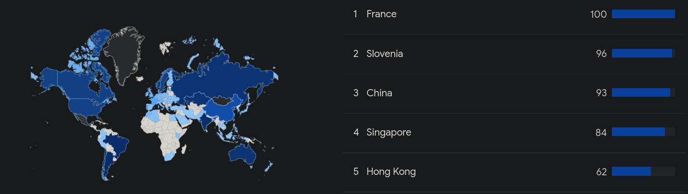

A song I like
I love music like most people.
A video about shaders
I find shaders and graphics programming very interesting topic(the examples are not mine, examples are from shadertoy.com).
A Shader gif
A blackhole shader that I find interesting

Slideshow
Books I've read or currently reading
Map
Click the red area to go to the zone

Video about shaders
A video that helped me learn about shaders.
RSS Feed
ocean feed
Languages I speak
English and Spanish
OCaml twitter account
Follow the OCaml twitter to show support for the language
Objective Caml